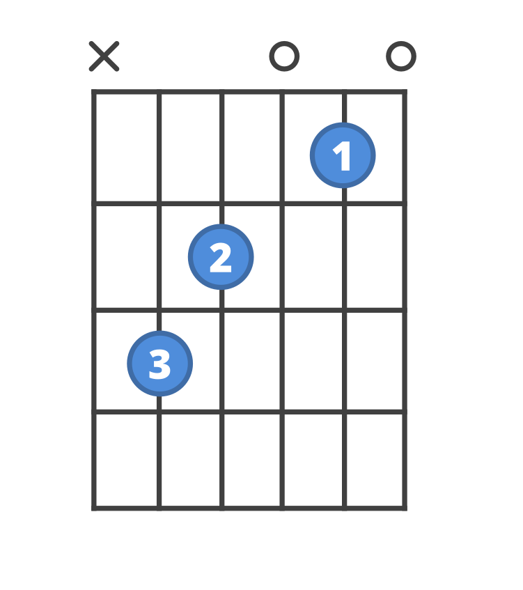

Chords
Chords are multiple notes played together at the same time. Chords can be played on multiple instruments including guitar and piano. The most basic songs can be as little as 2 chords.
Chords are an essential part of music, and especially guitar. The first thing beginners learn on guitar are the basic open chords. Open chord meaning that you play them with open strings making them the easiest chords to learn. The most basic type of chord is the major chord which includes the 1, 3, and 5 of that chords key. Bellow is a table of the easiest major chords.
Open Major Chords:
| Chord Name | Notes in the chord |
Chord fingering (The lowest string is on the left if your on a mobile device, or the top if your on computer. If there is and X next to that string, that means don't play that string.) |
|---|---|---|
| C | C E G |  |
| G | G B D |  |
| D | D F# A |  |
| E | E G# G |  |
Although these chords are nice to know, often times most songs will have minor chords as well as major chords. A minor chord gives more of a suspensful, and colder feel, while a major chord is a lot brighter and cheerful. A mixture of both makes for a good song. Bellow is a table of some easy minor chords.